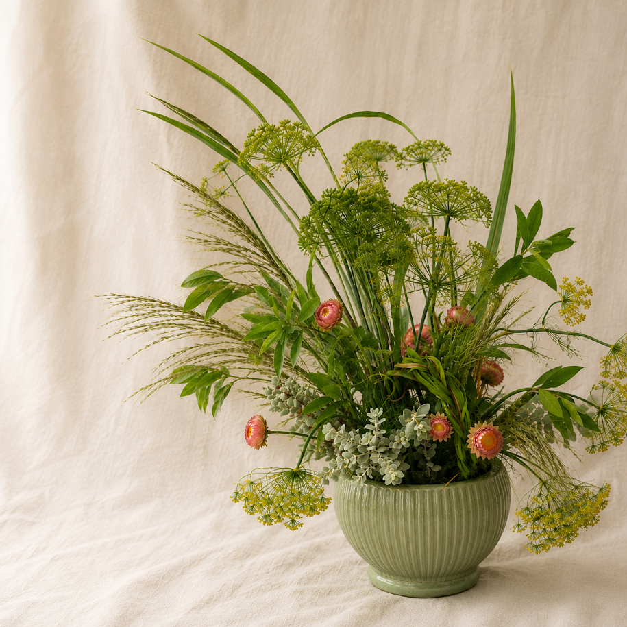
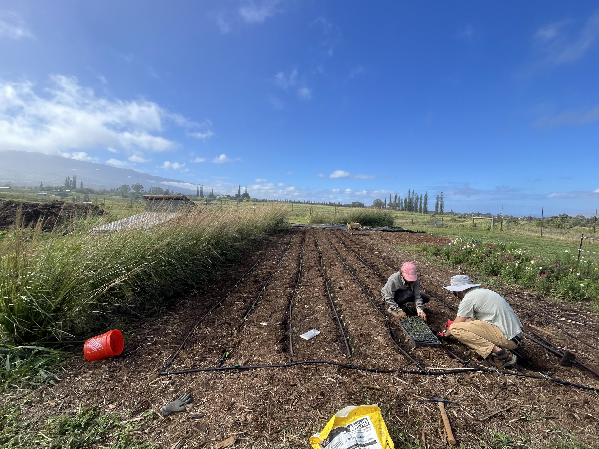
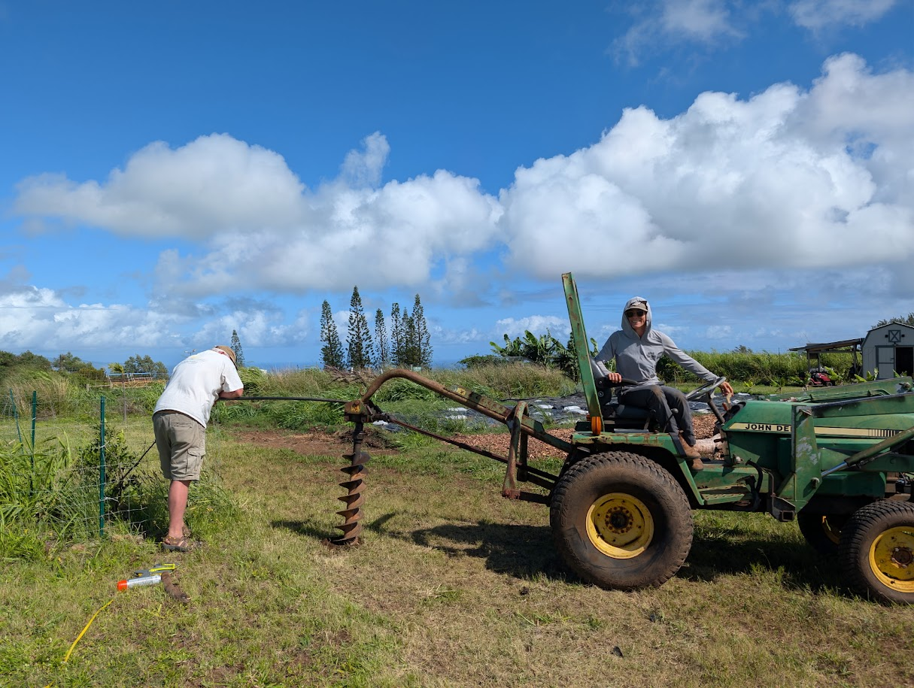

Join Our Community
Stay connected with seasonal flowers, workshops, farm updates, and upcoming events.

Flowers, food, education, and meaningful experiences rooted in regenerative agriculture.

Our flowers are grown seasonally using regenerative farming practices and harvested at their peak. Bouquets are available throughout the year as the seasons allow, celebrating the beauty of locally grown flowers.
We create custom floral arrangements, artistic installations, memorial pieces, business displays, tablescapes, weddings, and other special occasion florals using seasonal flowers grown on the farm whenever possible.


We grow a selection of tropical fruit that changes throughout the year. Availability depends on the seasons and harvest, allowing visitors to experience fresh fruit grown right here on the slopes of Haleakalā.
Fresh herbs are grown for home cooks, chefs, florists, and anyone who appreciates flavorful ingredients harvested straight from the garden.


We are continually developing educational guides, downloadable resources, and farm-inspired products that help people bring regenerative gardening into their own homes.
Kūʻono Farm provides a peaceful setting for farm dinners, intimate celebrations, photography sessions, educational gatherings, and other private experiences surrounded by Maui's natural beauty.


Throughout the year we host workshops focused on regenerative farming, gardening, flowers, seasonal growing, and hands-on agricultural skills.
Spend time on the farm, meet new people, and learn alongside us while helping care for the land. Volunteers are always welcome to grow with our community.

Stay connected with seasonal flowers, workshops, farm updates, and upcoming events.